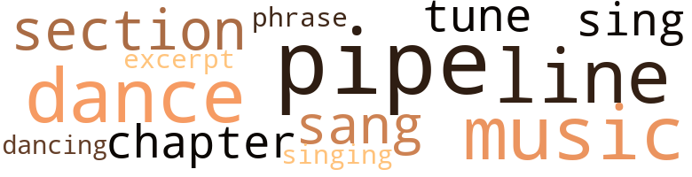
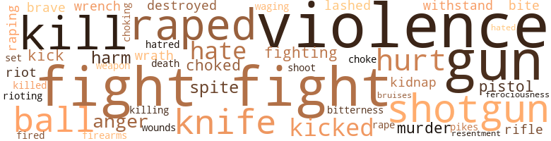

Town on Trial: A Novel of Racial Violence in a Southern Town, by Hooks, Nathaniel (1959)
18 music-related terms matched in this text.
Most frequent terms in this topic: pipe (3); dance (2); music (2); singing (1); section (1)
chapter.n.01
Definition: a subdivision of a written work; usually numbered and titled
| word | sentence |
|---|---|
| chapter | He opened his Bible and read from the book of Psalms , chapter forty-nine . |
dance.v.03
Definition: skip, leap, or move up and down or sideways
| word | sentence |
|---|---|
| dance | I 'm not trying to teach horses to dance , or pound the law into the heads of you people , but it will be much better if Robert is found and placed in jail . |
| dance | The music was just fit for the ears , and the boys and girls could dance to some of the hottest jazz in the South . |
| dancing | Chips and Vera were dancing like crazy . |
excerpt.n.01
Definition: a passage selected from a larger work
| word | sentence |
|---|---|
| excerpt | Cap read an excerpt from the paper . |
music.n.01
Definition: an artistic form of auditory communication incorporating instrumental or vocal tones in a structured and continuous manner
| word | sentence |
|---|---|
| music | The music was just fit for the ears , and the boys and girls could dance to some of the hottest jazz in the South . |
| music | Farther along the dirt road going toward Yellow Hill the music could not be heard . |
phrase.n.02
Definition: a short musical passage
| word | sentence |
|---|---|
| phrase | Each time before he asked a question he would phrase it to fit the expression on the faces of the judge and , more particularly the jury . |
pipe.n.04
Definition: a tubular wind instrument
| word | sentence |
|---|---|
| pipe | Out of breath , Mark gripped his left hand on the heavy pipe fence and with the same motion flung his body clear . |
| pipe | The storm did n't worry him ; he was as relaxed as if he were home smoking his pipe . |
| pipe | The main street is about six blocks long , and at the end of it there is a large grass lawn fenced in with iron pipe . |
section.n.01
Definition: a self-contained part of a larger composition (written or musical)
| word | sentence |
|---|---|
| section | All the vessels were in the white section of Pinesville . |
sing.v.02
Definition: produce tones with the voice
| word | sentence |
|---|---|
| sang | The minister looked over the congregation as the choir sang and the organ played , " Jesus , Keep Me Near the Cross . " |
| sing | We can all sing at the same time , but we talk one at a time . |
singing.n.01
Definition: the act of singing vocal music
| word | sentence |
|---|---|
| singing | The singing was not loud ; their voices were low-spoken too . |
tune.n.01
Definition: a succession of notes forming a distinctive sequence
| word | sentence |
|---|---|
| lines | He had taken those lines as the text for his sermon . |
| tune | Lou was looking and listening as the rain played a tune on top of the tin building . |
| line | Also to the right , and near the white line , was a table about three feet long , and two chairs for the defendant and his lawyer . |
205 violence-related terms matched in this text.
Most frequent terms in this topic: fight (31); violence (23); gun (16); kill (12); raped (10)
anger.n.01
Definition: a strong emotion; a feeling that is oriented toward some real or supposed grievance
| word | sentence |
|---|---|
| anger | Some of the things said in the papers caused much anger among the whites . |
| anger | The white man 's face turned red with anger . |
| anger | As Stacy turned to walk back into the station Doug 's anger hit the boiling point . |
| anger | This was the first time her father had heard what really happened , he had been in such a fit of anger since it had taken place . |
| anger | The hate , the madness , and all the anger that could come over a flock of people were there . |
bruise.n.01
Definition: an injury that doesn't break the skin but results in some discoloration
| word | sentence |
|---|---|
| bruises | They had a few cuts and bruises , but their hearts were hurt most of all . |
death.n.08
Definition: the act of killing
| word | sentence |
|---|---|
| death | Even if the prosecuting attorney had not asked for the death penalty , the jury would have invoked it anyway . |
defy.v.01
Definition: resist or confront with resistance
| word | sentence |
|---|---|
| withstand | It had been built to hold the city drunks , not to withstand the forces of a violent mob . |
| withstand | There was talk of a new uprising of the Negroes , even some coming from out of state , to help the dark people of Pinesville withstand the whites . |
destroy.v.04
Definition: put (an animal) to death
| word | sentence |
|---|---|
| destroyed | Most or maybe all of Pinesville would have been destroyed - yes , my home too , but it would have been your fault , " remarked the Reverend . |
| destroyed | But now that virtue has been destroyed , her body has been taken in the most brutal way a woman could lose that which only God can give . |
engage.v.07
Definition: carry on (wars, battles, or campaigns)
| word | sentence |
|---|---|
| waging | Only one fact was very clear to the people waging this war of nerves , that was the solemn word of Anna Lee Sandsby that Robert Brysom had raped her . |
ferociousness.n.01
Definition: the trait of extreme cruelty
| word | sentence |
|---|---|
| Ferociousness | Ferociousness and madness grew in his face . |
fight.n.05
Definition: a boxing or wrestling match
| word | sentence |
|---|---|
| Fight | Fight fire with fire - that 's my way . " |
| fight | He was a handsome man with long curly black hair , but his mouth still caused many a fight that a still tongue might have avoided . |
| fight | He 'll give you all you want in the line of fight . " ' |
| fight | As for me , I 'm a man with a lot of fight too . |
| fight | They were well aware of what the Constitution of the United Slates said , as well as the big fight going on now in the North . |
| fight | Stacy stood there waiting for Doug to return to get the fight well on the way . |
| fight | Doug started back , but some of the boys came in between the two men and stopped the fight . |
| fight | Charlie Rollen knew about how the fight would come out . |
| fight | Soon the men were cooling off from the near fight ; James Lloyd was wet with sweat but not hurt . |
| fight | The jury was all set for a long and hard fight ; but because of the heat and the low pay , they planned to make their part of the work as short as possible . |
| fight | Three witnesses had been called and the defense attorney Cedric Nuehall had not yet begun his fight . |
| fight | Walter R. Shipman had put up a good fight - one could see that in the faces of the people throughout the courtroom , as well as in the jury box . |
| fight | It 's fight or fall now - that 's the way the people saw it . |
| fight | Hub went to the floor , and the officers began trying to stop the fight . |
| fight | The sheriff and Davy were trying to break up the fight . |
| fight | Nuehall looked at the fight ; then looked up toward the sky , and in a low whisper he said , " Thank you , God , thank you . " |
| fight | The fight was still going on . |
| fight | Somehow the jury must have reached their verdict when no one was looking or during the fight . |
| fight | The judge looked at Robert for a few moments , then at the spectators and said , " Will the partakers in the fight please stand . " |
| fight | Judge Mathious said again , " The ones who were in the fight stand before me . " |
| fight | All the fight had gone out of the voice of the white man as he wiped his face with the rag . |
| fight | Hearing the fight , he jumped out of his car . |
| fight | With little or no fight left in them the three walked off , cursing among themselves . |
| fight | The result of the fight only heightened the resentment that now rose to the peak of their ability to kill . |
fight.v.02
Definition: fight against or resist strongly
| word | sentence |
|---|---|
| fight | How in hell we gon na git anywhere if we gon na fight each other ! |
| fight | One said , " If you want to fight , go find old man Sandsby . |
| fighting | He said , " Listen , Paul , when it comes down to doing some - thing the people of Pinesville do n't like , they are all fighting men . |
| fight | Tell the people who think otherwise , that I can and will fight ; in court , or out . |
| fight | All the things that the Urban League people wanted to fight for them to get , and the rights they had been deprived of for so many years , were nothing new to them . |
| fight | They did n't want Stacy and Doug to fight , and neither did Doug . |
| fight | Stacy went back into the station , but he was looking at Doug to see if he still wanted to fight . |
| fight | This was the first time anyone , even the prosecuting attorney Walter R. Shipman , knew just how Nuehall had planned to fight . |
| fight | They knew he would fight because they knew him . |
| fighting | Clyde raised his right foot , and like a jackass he staved the fighting white man in the lower part of his stomach , causing the man to fall holding his belly . |
| fighting | The three fighting men were far from cool after Mark stopped the action . |
firearm.n.01
Definition: a portable gun
| word | sentence |
|---|---|
| firearms | Noticing the pistol in his pocket , he said , " Lou , you 're violating the state firearms act . |
gag.v.06
Definition: cause to retch or choke
| word | sentence |
|---|---|
| choke | She seemed to choke as she tried to remember and reconstruct what happened . |
| choked | Three white men stepped from the alley on his right , and one of them choked his shirt collar up around his neck as the other two held his arms on both sides . |
| choked | Before the frightened Negro could answer , the white man choked his collar up closer and drew back his hand . |
| choking | He was choking with his secret . |
| choked | One of the white men held him by his right arm , the other had a firm hold on his left , while the third man choked his shirt collar around his neck . |
gun.n.01
Definition: a weapon that discharges a missile at high velocity (especially from a metal tube or barrel)
| word | sentence |
|---|---|
| gun | Before she could say a word , Mark turned to her , looked at her , took a deep breath and pulled his hat down on his head , resting his right hand on his gun and the other palm up as he talked . |
| gun | Red asked Jim , " How you gon na git the gun in the station ? " |
| gun | Then he took his stand near the door , with the gun loaded . |
| guns | The officers had faith in the minister , but just the same they had their hands on their guns . |
| gun | Mark still had his gun in his hand . |
| gun | Mark paused for a few seconds , and put his gun back into his holster , but Davy kept his gun in his hand as he looked the crowd over . |
| gun | Mark paused for a few seconds , and put his gun back into his holster , but Davy kept his gun in his hand as he looked the crowd over . |
| gun | Mark pulled out his gun again and pointed it at Hub Sandsby . |
| gun | He put his gun in his holster , more excited now than he had been doing the entire encounter . |
| gun | He did n't know from where the gun was to be shot , but he stood there beside the bell with his gun in his hand , looking in the direction of the little station . |
| gun | He did n't know from where the gun was to be shot , but he stood there beside the bell with his gun in his hand , looking in the direction of the little station . |
| gun | Mark got his vest and hat , then put on his gun . |
| gun | Mark adjusted his hat and gun holster . |
| gun | Mark had his gun out pointed at Hub . |
| gun | Now , put your gun away before it makes trouble for you . " |
| gun | Mark pulled off his gun and unloaded it as he always did . |
| guns | They walked through the woods , well equipped with guns , sticks , and a rope . |
| gun | With his gun in his right hand , Lou raised his foot and kicked the old wooden door . |
hate.n.01
Definition: the emotion of intense dislike; a feeling of dislike so strong that it demands action
| word | sentence |
|---|---|
| hate | All the love that had long been in the hearts of the two races was now turning into hate and fear . |
| hate | Pinesville was not an outcast swamp of hate but a town just like any other in any part of the country . |
| hate | The hate , the madness , and all the anger that could come over a flock of people were there . |
| hate | As the restless hours passed Pinesville became more of a pit of hell and hate than the land of humanity it had been just a matter of hours before . |
| hatred | No one was saying very much , but the thoughts were in their heads , and hatred was in their hearts . |
hate.v.01
Definition: dislike intensely; feel antipathy or aversion towards
| word | sentence |
|---|---|
| hate | Cap Anderson remarked , " Leroy , I 'd hate to think of something happening to you folks down there in the Low Quarters , would n't you ? " |
| hated | The vain search had made them very restless ; they hated everyone in the Low Quarters . |
hurt.v.04
Definition: cause damage or affect negatively
| word | sentence |
|---|---|
| hurt | They had a few cuts and bruises , but their hearts were hurt most of all . |
injury.n.01
Definition: any physical damage to the body caused by violence or accident or fracture etc.
| word | sentence |
|---|---|
| harm | Mark looked at her and said to Sue more calmly , " No harm will come to Robert from the law ; he 'll receive justice in a fair trial in a fair court . " |
| harm | He wondered if the sheriff could stop the white folks from doing harm to the Low Quarters . |
| harm | " I do n't know , but it could have done a lot of harm , " answered another . |
| harm | Mark knew that there was no harm to come from Alfonso Evans . |
kick_back.v.02
Definition: spring back, as from a forceful thrust
| word | sentence |
|---|---|
| kicked | With his right foot George kicked the door closed . |
| kick | I 'll kick the hell out of him and his black boy too . " |
| kick | Doug said , " I 'll kick hell outa both of you . " |
| kick | Then he said , " If you think you can kick anybody here , now is a damn good time to start . " |
| kicked | Hub kicked at him ; his foot glanced Davy 's face . |
| kicked | With his right foot the man kicked Jack Fuller 's legs from under him , and Jack went to the ground . |
| kicked | He knocked Clyde down ; the first man kicked at his face . |
| kicked | With his gun in his right hand , Lou raised his foot and kicked the old wooden door . |
kidnap.v.01
Definition: take away to an undisclosed location against their will and usually in order to extract a ransom
| word | sentence |
|---|---|
| kidnap | " In this state , kidnap or rape means the electric chair , and no questions asked . " |
| kidnap | He said , " The state against Robert Brysom , male , colored : the charge , kidnap and criminal rape of Anna Lee Sandsby , female , seventeen years old , white . . . . |
kill.v.10
Definition: cause the death of, without intention
| word | sentence |
|---|---|
| kill | " Even if Robert was in jail , they would bust in and git him , and kill him just the same . |
| kill | Their faces spelled terror and in their eyes you could see the boiling hunger to kill . |
| killed | The only thing you can do now is get yourself killed , there ai n't no use in that . " |
| kill | " Nevertheless , " continued the minister , " you were there , and were no doubt ready to kill if you saw fit to do so . " |
| kill | Probably like a brush pile after you burn it up trying to run a snake out to kill 'm . |
| kill | " They are gon na kill you if they find you , " he told him . |
| kill | He told me if I did n't do what he wanted me to , he would kill me . " |
| kill | When he got up he told me I had better not tell anybody or he would kill me . |
| kill | All they want to do now is kill him . " |
| kill | But there were still those who held in their minds the lust to kill . |
| kill | " You all had better come up with him , or we 'll kill everyone in the damn Quarters , hear ! |
| kill | The result of the fight only heightened the resentment that now rose to the peak of their ability to kill . |
killing.n.02
Definition: the act of terminating a life
| word | sentence |
|---|---|
| kill | As he threw the match on the floor , he said in a furious voice , " If they think somebody gon na set here and let dem kill 'm , they 's goddamn fools . " |
| killing | Now they knew how the Hebrews must have felt in the fiery furnace , or how the ancient Christians must have felt when they were fed to wild beasts , or how the great Herod was amused at the killing of good people . |
knife.n.02
Definition: a weapon with a handle and blade with a sharp point
| word | sentence |
|---|---|
| knife | With the speed of lightning George had his knife out and open , and stood there with the seven-inch blade in his hand . |
| knife | There were a wallet , a wrench , a screw driver and a hooked-blade knife . |
| knife | Those words cut like a knife . |
| knife | He said , " A screw driver , wrench , and a knife - is that it ? " |
| knife | Shipman wanted the jury to get a good look at the things on the table , the knife in particular . |
| knife | I started to holler ; he put a rag in my mouth and put a knife on my neck . |
| knife | He made me pull off my underwear , then got on me - he had the knife close against my neck ; I could feel the blade against my skin . |
malice.n.01
Definition: feeling a need to see others suffer
| word | sentence |
|---|---|
| spite | In spite of what the white people might do , they were planning the worst of all . |
| spite | Cleve said , " I think the best that can be done will be done at the trial , in spite of what 's been said by people who just see it as the same old seven and six in a court in the South . " |
| spite | Things were materializing slowly over on Yellow Hill and in town , but , in spite of the gloominess , the Negroes in the Low Quarters went about their work . |
| spite | Mark then leaned back in his chair , and said , " In spite of the general rule about how a rape case in the South is handled , and what the folks say about it , here in Pinesville we have law and equality in our courts . |
murder.n.01
Definition: unlawful premeditated killing of a human being by a human being
| word | sentence |
|---|---|
| murder | They had had all they wanted from the men at the footbridge , and their madness was at the point of murder . |
| murder | Rape meant mob violence , lynching , and murder ; many people without protection , even a whole town with no protection . |
| murder | They pledged themselves to get Robert Brysom , even if it meant mass murder . |
musket_ball.n.01
Definition: a solid projectile that is shot by a musket
| word | sentence |
|---|---|
| ball | The rags were to be shaped , and tied with strings , so that they formed a ball . |
| ball | The flame would spread as the ball hit the ground . |
| balls | They went ahead and lighted the oil-soaked rag balls , but instead of the bell they heard voices coming from the direction of the Low Quarters . |
| balls | They knew something was wrong ; with the balls lit , the noise of the people coming , and the fact that the bell had not sounded , they were scared and very nervous . |
| ball | At the first of the two pool tables , Cory Gossonel was banking the cue ball off the sides of the patch-top table . |
| ball | Just as he was about to take aim on the ball , one of the two men silting near the door asked him , " Did you see Jack Fuller when he come by here ! " |
| ball | Cory took a close aim at the ball , and answered , " I do n't know , but he sure was n't on no joy ride . " |
open_fire.v.01
Definition: start firing a weapon
| word | sentence |
|---|---|
| fired | He fired one shot into the bridge , and said in a firm voice , " Stay back , Lou . |
pain.v.02
Definition: cause emotional anguish or make miserable
| word | sentence |
|---|---|
| hurt | I do n't want you to get hurt or to hurt anyone . |
| hurt | He said , " Stop it , Doug , there ai n't nothing to get yourself hurt about ; besides , you 're right across the street from the police station . " |
| hurt | Soon the men were cooling off from the near fight ; James Lloyd was wet with sweat but not hurt . |
| hurt | He could see the tears slowly falling from her eyes ; he would hold his head in his hands , it hurt him so to see her cry . |
| hurt | " He said , ' I like you , I 'm not gon na hurt you , baby . ' |
pike.n.04
Definition: medieval weapon consisting of a spearhead attached to a long pole or pikestaff; superseded by the bayonet
| word | sentence |
|---|---|
| Pikes | Pikes looked at him with fear in his eyes . |
pistol.n.01
Definition: a firearm that is held and fired with one hand
| word | sentence |
|---|---|
| pistol | Mark was not sure what Lou 's intention was , but the second he stepped out from the crowd and in the direction of the footbridge , the sheriff had drawn his pistol . |
| pistol | He was carrying a pistol in a holster in his right hip pocket . |
| pistol | Noticing the pistol in his pocket , he said , " Lou , you 're violating the state firearms act . |
rape.n.03
Definition: the crime of forcing a woman to submit to sexual intercourse against her will
| word | sentence |
|---|---|
| rape | He said , " The state against Robert Brysom , male , colored : the charge , kidnap and criminal rape of Anna Lee Sandsby , female , seventeen years old , white . . . . |
rape.v.01
Definition: force (someone) to have sex against their will
| word | sentence |
|---|---|
| raped | Hub Sandsby said , " That boy raped my child , and we want him now - not later - now ! " |
| raping | He said , " Now here is what you want to remember : there ai n't no nigger never went on trial for raping a white woman here , and it ai n't gon na start now . " |
| raped | Only one fact was very clear to the people waging this war of nerves , that was the solemn word of Anna Lee Sandsby that Robert Brysom had raped her . |
| raping | Davy said , " Mark , there has been a raping on Yellow Hill . |
| raped | " Who raped who ? " asked Mark . |
| raped | They knew only that the white folks said Robert Brysom raped a white girl , that there was a storm at the footbridge , and that the white folks claimed some Negroes tried to burn down the town . |
| raped | If a doctor looked at her , he would find she has been had ; but her having been raped , now that 's a different question . " |
| raped | With the look of defeat in her face she said , " Sheriff , Robert ai n't raped nobody , but ai n't nobody interested in that at all . |
| raped | Who raped who ? " |
| raped | " Robert Brysom raped Anna Lee Sandsby late this evening . " |
| raped | He too had heard about Anna Lee Sandsby being raped . |
| raped | He said in an angry voice , " Where is that boy that raped the white woman ? " |
resentment.n.01
Definition: a feeling of deep and bitter anger and ill-will
| word | sentence |
|---|---|
| bitterness | The news of the violence and revolt of the Negroes in the Low Quarters and their attempt to destroy Pinesville by fire was greeted with much bitterness . |
| resentment | The result of the fight only heightened the resentment that now rose to the peak of their ability to kill . |
rifle.n.01
Definition: a shoulder firearm with a long barrel and a rifled bore
| word | sentence |
|---|---|
| rifle | With a 30.06 rifle he would shoot the bell ; at this the bell would give a reverberating as well as a distracting sound that could be heard all over the township . |
| rifle | Though Jim was armed with a 30.06 rifle which had a loud sound itself , the bell had a deeper , more vibrating tone . |
riot.n.01
Definition: a public act of violence by an unruly mob
| word | sentence |
|---|---|
| riot | He was fully aware of the whereabouts of Robert Brysom , but Mark wanted to stop the riot altogether , not stop it at the footbridge and start it at the county jail . |
| riot | Mark took a deep breath and said , " There 's more to do now than to find a man ; we got ta keep down a riot . " |
rioting.n.01
Definition: a state of disorder involving group violence
| word | sentence |
|---|---|
| rioting | Sheriff Mark Iverson was not too sure just what the violent men had in mind , but in any case he and his fellow officers were determined to prevent rioting even if it meant calling in the state troopers . |
shoot.v.02
Definition: kill by firing a missile
| word | sentence |
|---|---|
| shoot | Do n't make me shoot anybodyl " At the sound of the shot the Negroes huddled together near the tree . |
shotgun.n.01
Definition: firearm that is a double-barreled smoothbore shoulder weapon for firing shot at short ranges
| word | sentence |
|---|---|
| shotgun | Barney looked in the closet and got out an old rusty twelve-gauge shotgun ; it was a single shot . |
| shotgun | Lou had his shotgun at his side . |
| shotgun | His wife , Ethel , looked on as he got down the shotgun : she said something to him but he never bothered to answer her . |
| shotgun | Mark thought for a few seconds then looked at the deputy and said , " Listen , Rich , take this shotgun and go up to the jail and stay there . |
| shotgun | One had on overalls and a blue shirt and was armed with a shotgun . |
| shotgun | Lou raised his shotgun to waist level as he remarked , " You 've been warned . |
| shotgun | He still had his shotgun in his hand . |
| shotgun | It was built in the old shotgun style , with an annex on the west about two feet above roof level . |
| shotgun | One of them moved a few of the old dusty burlap bags around with the barrel of his shotgun . |
sic.v.01
Definition: urge to attack someone
| word | sentence |
|---|---|
| set | Down the dirt road , after a short turn , you come to the Negro church set on the right-hand corner , where the dirt road makes a left-hand turn . |
sting.n.03
Definition: a painful wound caused by the thrust of an insect's stinger into skin
| word | sentence |
|---|---|
| bite | Mark was at home having a bite to eat with his family . |
| bite | His face turned red , he took a bite of his chewing tobacco , spat the fragment from his lips , then put the remains of the plug in his pocket and remarked , " If they want to trade their lives for one no-good black boy , now is their big chance . " |
violence.n.01
Definition: an act of aggression (as one against a person who resists)
| word | sentence |
|---|---|
| violence | It was of little use for him or the law enforcement officers of the town to try to restrain the act of violence that was coming . |
| violence | Reverend Banks was still trying in every way to stop this mad violence with the word of God . |
| violence | I 'm the law in Lee County , and so help me , there ai n't gon na be no mob violence here . " |
| violence | The news of the violence and revolt of the Negroes in the Low Quarters and their attempt to destroy Pinesville by fire was greeted with much bitterness . |
| violence | But if one by one we take in enough ' drunks ' we 'll have a full force of violence inside , and even more outside . " |
| violence | Anger , violence and all the fire of hell were slowly taking shape . |
| violence | Rape meant mob violence , lynching , and murder ; many people without protection , even a whole town with no protection . |
| violence | These people had not been there in the making of the violence , and probably had not thought of it as a matter of great importance until now . |
| violence | With the deputies covering the town for a possible uprising of new violence , Mark thought he would check the scene of the alleged rape . |
| violence | He thought of the violence , and how no one had asked any questions about whether the boy had really done it or not . |
| violence | Little was said about the near tragedy Pinesville had almost gone through , or the violence of the case . |
| violence | When members of the press asked about the violence and the revolt he tried to be as calm and as much his old self as possible . |
| violence | Davy went on around the Low Quarters to make the routine check as they had been doing since the violence began . |
| violence | The townspeople were being blocked in every move they made to set off new violence . |
| violence | The violence and the mad outbreak had not been pleasant things , but then neither is the word rape a pleasant thing . |
| violence | The rest of the officers were in their places ; they were to keep an eye on the whole court , in case of any outbreak of violence . |
| violence | ' This is a fine time for violence , " he thought , " but a better time for sleep . " |
| violence | He overheard what was said by the men as he was approaching , and knew of the outbreak of a spirit of violence in the town . |
| violence | The sheriff knew his forces were not nearly strong enough to go on with the search and hold down the violence too . |
| violence | It was easy to see that the violence had begun . |
| violence | Mark , facing the Reverend with his right arm on his desk , said , " I ca n't help what they have been led to think , and I ca n't put no muzzle on Hub Sandsby s mouth , or anyone else 's , for that matter , but violence I can and will stop , if and when it starts . |
| violence | Being ignorant of the violence in the making , he was on his way home as he had been many times before . |
| violence | " We ai n't gon na have no violence here . |
weapon.n.01
Definition: any instrument or instrumentality used in fighting or hunting
| word | sentence |
|---|---|
| weapon | There were not too many present , but they were a good crowd , and those who had come felt they were taking part in a good cause and using the only weapon they had . |
weather.v.01
Definition: face and withstand with courage
| word | sentence |
|---|---|
| brave | He said this in a brave manner , but in his heart he knew he did n't stand a chance , and there was no place to hide . |
| brave | Slowly the tears began to roll down his face , but he tried to be as brave as he could for her sake . |
whip.v.04
Definition: strike as if by whipping
| word | sentence |
|---|---|
| lashed | As her father demanded her previous whereabouts , he lashed her with the rope . |
| lashed | Before she could speak he lashed her with the rope again , and she fell on the bed . |
wound.n.01
Definition: an injury to living tissue (especially an injury involving a cut or break in the skin)
| word | sentence |
|---|---|
| wounds | It might take some time for the town to forget about the outcome of the trial , but then that 's what time is for - to heal the wounds of unhappy memories . |
wrath.n.01
Definition: intense anger (usually on an epic scale)
| word | sentence |
|---|---|
| wrath | The very thought of what might have happened if the fire had gotten started filled the white men with wrath . |
| wrath | As a result of the meeting , they decided that if the Negroes had not turned Robert Brysom over to them by nightfall , they would suffer the full force of the town 's wrath . |
wrench.n.01
Definition: a sharp strain on muscles or ligaments
| word | sentence |
|---|---|
| wrench | There were a wallet , a wrench , a screw driver and a hooked-blade knife . |
| wrench | Hub started back with the wrench from the table . |
77 religion-related terms matched in this text.
Most frequent terms in this topic: church (18); God (15); faith (8); preacher (8); prayer (8)
christian.n.01
Definition: a religious person who believes Jesus is the Christ and who is a member of a Christian denomination
| word | sentence |
|---|---|
| Christians | Now they knew how the Hebrews must have felt in the fiery furnace , or how the ancient Christians must have felt when they were fed to wild beasts , or how the great Herod was amused at the killing of good people . |
church.n.02
Definition: a place for public (especially Christian) worship
| word | sentence |
|---|---|
| church | Lou looked at the man of God and said , " We 'll handle everything ; it ai n't no use calling the church in on this . " |
| church | Sparks was a deacon of the colored church . |
| church | Some people were going to church , some as always were making an excuse not to . |
| church | Reverend Andrew Banks , pastor of Mount Sinai , the largest church in Pinesville , had , as always , a nearly full house . |
| church | He was always very happy to see so many young people turning out for Sunday school and church . |
| church | Down the dirt road , after a short turn , you come to the Negro church set on the right-hand corner , where the dirt road makes a left-hand turn . |
| church | It is a small one-room building that serves as a church on Sundays and is the colored school five days a week during school season . |
| church | Reverend Levy Washington was not the pastor of the colored church , but he was a member there . |
| church | Most of the old heads , and some of the young too , were getting ready to go to church . |
| church | Reverend Levy Washington went to church early , lit the lights and opened the doors . |
| church | This was the first time in a long time that the lights were on in the little church on a Monday night . |
| church | Sue did n't go to the church . |
| church | " Do you go to church , Anna Lee ? " |
| church | Although Mary 's place was just across the road from the church , there was always lots of fun for the people of the Low Quarters there . |
| church | Make sure the colored church is not overlooked . |
church.n.04
Definition: the body of people who attend or belong to a particular local church
| word | sentence |
|---|---|
| church | Reverend Banks interrupted Lou as he said , " When the rights and privileges of a neighbor are in jeopardy or trampled on , the church is always involved . " |
| churches | It was built there long ago by the white churches , who still share the expense because the Negro membership is so small . |
| church | Reverend Levy Washington went about in the Low Quarters to the houses of the church members and asked them to come out to the church that night and have a word of prayer for Robert Brysom . |
| church | Reverend Banks was pastor of Mount Olive Chapel , a Christian Baptist church , the largest in Pinesville . |
curate.n.01
Definition: a person authorized to conduct religious worship
| word | sentence |
|---|---|
| pastor | One of the men looked at the pastor and said , " When it ai n't safe for a white woman to walk about without some of them niggers could rape her , it 's time they learned some respect . " |
| pastor | Reverend Andrew Banks , pastor of Mount Sinai , the largest church in Pinesville , had , as always , a nearly full house . |
| pastor | Reverend Levy Washington was not the pastor of the colored church , but he was a member there . |
| pastor | Reverend Banks was pastor of Mount Olive Chapel , a Christian Baptist church , the largest in Pinesville . |
| pastor | The intelligent pastor spoke in a deep and sincere voice . |
god.n.03
Definition: a man of such superior qualities that he seems like a deity to other people
| word | sentence |
|---|---|
| God | Lou looked at the man of God and said , " We 'll handle everything ; it ai n't no use calling the church in on this . " |
| God | " What 's to happen from this point on , " thought Barney , " is up to God and luck . " |
| God | We are the seeds of Abraham , and Abraham is the fruit of God . |
| God | We must respect the laws of God and man . |
| God | " Because there is no truth in the devil , and no salvation in hell " - he raised his voice a bit - " he that is of God hears the word of God , and hear me nowl " The words that were spoken by the clergyman were well heard . |
| God | I hope and pray to God everything will be okay . " |
| God | They counted on prayer and faith in God ; they thought if they had faith in the all-powerful God He would make many things possible for them . |
| God | If she had held any conversation , she must have held it with God . |
| God | God ai n't gon na let nothing happen that He do n't want to happen . " |
| God | You could almost hear the hearts of two people , as they pounded out a desperate prayer that only God was worthy to hear . |
| God | Almighty God , I ask You to do this in the name of Your Son , Jesus . " |
| God | And each in his own way shows his respect to God , and the same God at that . " |
| God | And each in his own way shows his respect to God , and the same God at that . " |
| God | But now that virtue has been destroyed , her body has been taken in the most brutal way a woman could lose that which only God can give . |
| God | But I hope and pray to God them white men ai n't found him . " |
godhead.n.01
Definition: terms referring to the Judeo-Christian God
| word | sentence |
|---|---|
| Almighty | Almighty God , I ask You to do this in the name of Your Son , Jesus . " |
hell.n.01
Definition: any place of pain and turmoil
| word | sentence |
|---|---|
| hell | Anger , violence and all the fire of hell were slowly taking shape . |
jew.n.01
Definition: a person belonging to the worldwide group claiming descent from Jacob (or converted to it) and connected by cultural or religious ties
| word | sentence |
|---|---|
| Hebrews | Now they knew how the Hebrews must have felt in the fiery furnace , or how the ancient Christians must have felt when they were fed to wild beasts , or how the great Herod was amused at the killing of good people . |
prayer.n.01
Definition: the act of communicating with a deity (especially as a petition or in adoration or contrition or thanksgiving)
| word | sentence |
|---|---|
| prayer | They counted on prayer and faith in God ; they thought if they had faith in the all-powerful God He would make many things possible for them . |
| prayers | When they were asked questions by the many people who had come to Pinesville as a result of the rape case , questions they did n't understand too clearly , they would say , " God sees all , He hears all , and will answer all prayers that come from the heart . " |
| prayer | From time to time during the tearful conversation , Sue would reach her hand through the bars and rub Robert 's face and feel his skin ; at the same time she would say a prayer in her heart . |
| prayer | You could almost hear the hearts of two people , as they pounded out a desperate prayer that only God was worthy to hear . |
| prayer | Somehow she wished tomorrow would never come , because today she had something to look forward to - a big chance that might come out of prayer . |
| Prayer | Prayer was the only thing that could help now , and the only thing the people in the Low Quarters could give plentifully . |
| prayer | Reverend Levy Washington went about in the Low Quarters to the houses of the church members and asked them to come out to the church that night and have a word of prayer for Robert Brysom . |
| prayer | All the people he talked to said they would come to prayer meeting that Monday night . |
| prayer | The Reverend paused for a few seconds ; his lips were dry , he wet them with his tongue and finished his prayer , saying , " Lord , you know our hearts , our souls . |
| prayers | And all over the nation where the news had reached , there were prayers and hopes . |
| prayer | I do n't guess nobody needs prayer more than us now , unless it would be Robert Brysom , " Davy said with a smile . |
preacher.n.01
Definition: someone whose occupation is preaching the gospel
| word | sentence |
|---|---|
| preacher | " Reverend , this ai n't no place for a preacher and no time for the Gospel . " |
| preacher | " This is just the place for the Gospel as well as the preacher , " answered the Reverend Banks . |
| preacher | There were only three officers and one preacher , and the angry white men outnumbered them many times . |
| preacher | Mark was even more shocked than the preacher was at the news . |
| preacher | Cap Anderson looked at the preacher with one eye closed . |
| preacher | " Tomorrow we 'll git the one who told the preacher about the bell . " |
| preacher | The Reverend Levy Washington , a Negro preacher who lived in the Low Quarters and knew Robert and Sue well , felt very sorry for her and the family that Robert might never join again . |
| preacher | One said as he spat out tobacco , " Look , there 's the sheriff got the preacher huntin ' . " |
religion.n.01
Definition: a strong belief in a supernatural power or powers that control human destiny
| word | sentence |
|---|---|
| faith | Like the people of those days , they were patient and enduring , waiting and having faith in the brighter side of life . |
| faith | He had lots of faith in Mr. and Mrs. Bailey . |
| faith | The officers had faith in the minister , but just the same they had their hands on their guns . |
| faith | With all the faith in the world in the men and the result of a good and fruitful meeting , Cap shook his head from side to side and said , " This is a good night , the best we could have . |
| faith | Mark was not on any special side ; he was just the sheriff of Lee County for all the people , and above all he believed in the right tiling and put a lot of faith in people - all people . |
| faith | They counted on prayer and faith in God ; they thought if they had faith in the all-powerful God He would make many things possible for them . |
| faith | They counted on prayer and faith in God ; they thought if they had faith in the all-powerful God He would make many things possible for them . |
| faith | He paused for a second , then said , " But you do have a lot of faith in the truth , do n't you ? " |
saint.n.02
Definition: person of exceptional holiness
| word | sentence |
|---|---|
| saints | Davy said , " I guess the people outside the state have called us here in Pinesville everything from saints to sinners . " |
| saints | Mark put out his cigarette and continued , " Then they 're all ' the saints , ' and deep down in their minds they want to be known for their good , and for their bad to be forgotten . " |
satan.n.01
Definition: (Judeo-Christian and Islamic religions) chief spirit of evil and adversary of God; tempter of mankind; master of Hell
| word | sentence |
|---|---|
| devil | If we follow the lust of the devil , and the liking of his evil doing , then we are murderers from the beginning , and abide not in the truth . " |
| devil | " Because there is no truth in the devil , and no salvation in hell " - he raised his voice a bit - " he that is of God hears the word of God , and hear me nowl " The words that were spoken by the clergyman were well heard . |
| devil | It seemed as if the devil had refueled the fire . |
sermon.n.02
Definition: a moralistic rebuke
| word | sentence |
|---|---|
| sermon | The Reverend took a deep breath and continued the sermon . |
| sermon | He had taken those lines as the text for his sermon . |